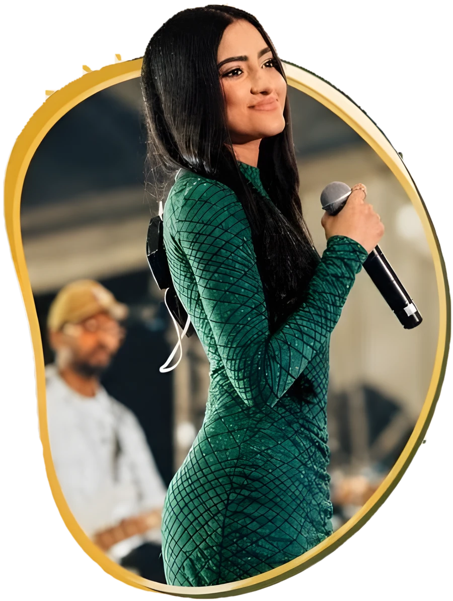
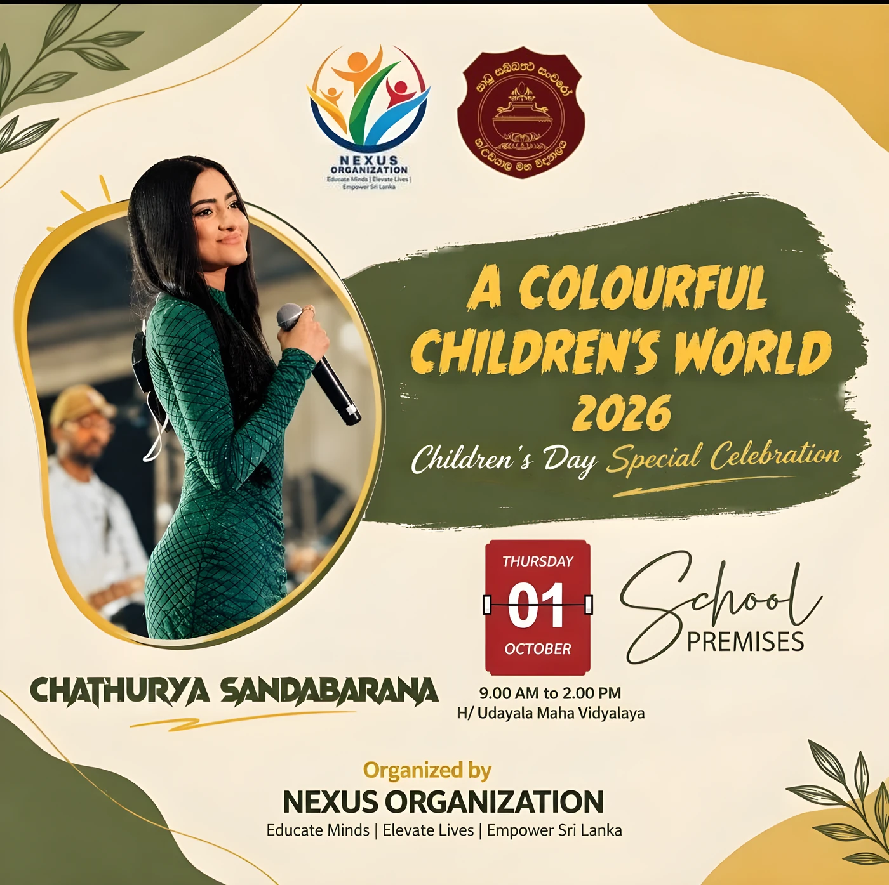

ChathuryaSandabarana
Singer from Tangalle, Sri Lanka. On concert stages, on television and on The Voice.

About Chathurya
Chathurya Sandabarana is a singer who grew up in Tangalle, on Sri Lanka's southern coast. Singing is the centre of her work, and she has performed at a great many shows, concerts and events.
Her voice has reached audiences on television, through musical performances and appearances on television podcasts, and on the stage of The Voice. She has also appeared on screen in the Sinhala film Man Hoyanne Premayak.
Performances
Choose a category to see where Chathurya has performed.
Singing
Singing is at the heart of everything Chathurya does. She performs live for audiences of every kind, from large concert stages to school and community celebrations.
Her performances have taken her from live venues to television studios and to the stage of The Voice.
Concerts and events
Chathurya has sung at a great many shows, concerts and events, performing for audiences across Sri Lanka.

A Colourful Children's World 2026
Featured singer at the Children's Day special celebration organised by Nexus Organization at H/Udayala Maha Vidyalaya.
Handawaka
Sang as part of the Handawaka concert.
Television
Chathurya has sung on television and has been a guest on television podcasts, sharing her music and her story with audiences at home.
Musical performances
Singing on television programmes.
Television podcasts
Guest appearances, conversation and live singing.
Programme names and recordings will be added here.
The Voice
Chathurya took part in The Voice, the singing competition where artists are chosen on the strength of their voice alone.
Contestant
Performed on The Voice singing competition.
Performance videos will be added here.
Film
Alongside her music, Chathurya has appeared on screen in a Sinhala feature film.
Man Hoyanne Premayak
Appeared as an actress in the Sinhala feature film.
Contact
For performance enquiries, television and media requests, and collaborations, please get in touch.
Contact details will be added here shortly.